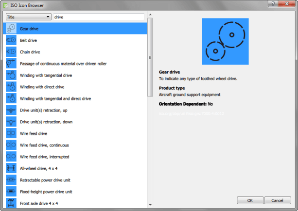

Browsing ISO 7000 Icons
You can add icons from an ISO 7000 icon library that is installed with Qt Creator to Qt Quick applications (commercial only). You can use the ISO Icon Browser to add a Picture type and select the icon to use for the type. You can change the default color of the icon.

Using ISO Icons in Applications
- Create a new Qt Quick Application or open an application in Qt Creator.
- Open the Qt Quick UI form in the Design mode.
- In the Library, select Imports > Add Import > QtQuick.Extras to import the Qt Quick Extras module.
- Drag and drop a Picture element from the library to the canvas.
- Right-click the picture element and select Choose Icon to open the ISO Icon Browser.
- To find icons, select a criterion for filtering icons and enter a search string.
- Select an icon in the list, and then select OK to add the icon.
- To view the icon you added, press Ctrl+R (or Cmd+R) to run the application.
- To adjust the icon color, select the icon on the canvas, and then select Edit Color in the context menu.
Qt Creator generates a Qt resource file called iso-icons.qrc that adds the icons as a part of your project for delivery with your application.